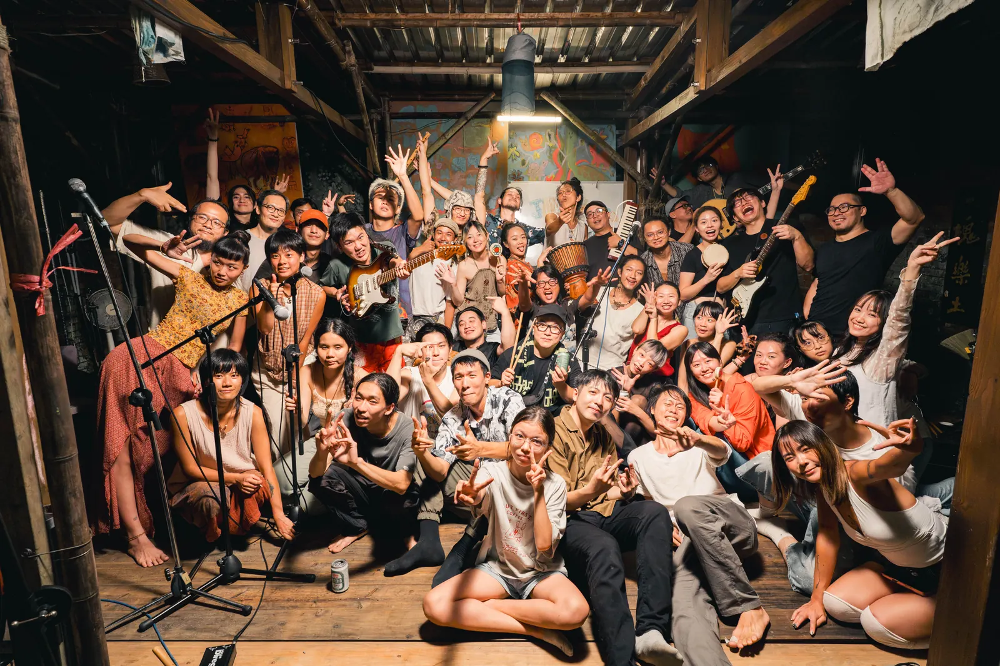
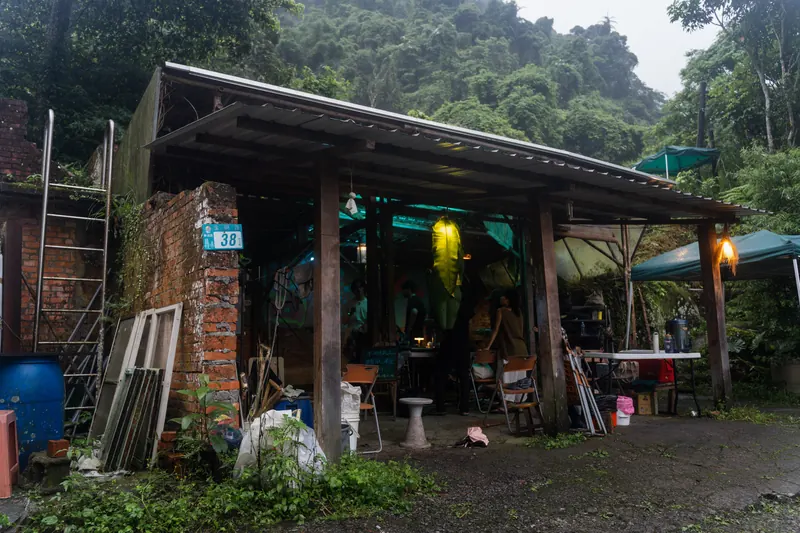

相Jam恨晚Wish We’d Jammed Sooner
14 張照片 photos
Community Music Jam · Xindian, New Taipei
一群愛玩音樂的朋友，
在新店山上，把夜晚玩成一場音樂實驗。
A hillside music night in Xindian, where friends — and friends of friends — turn music into play.

About

「音樂就是玩樂。」
Jam Night 從新店山上的花園新城社區開始。一群喜歡玩音樂的朋友聚在一起，想邀請更多人一起玩。
看似隨意的一個舉動，就這樣一屆一屆辦了下去。隨著活動越來越大，我們想讓更多人知道：這裡是一個實驗場，歡迎你帶著樂器、帶著好奇心，一起來玩。
Jam Night began in Huayuan Xincheng (Garden New City), a hillside community in Xindian. A few friends who loved making music got together and wanted more people to join in. What started as a casual idea simply kept going — twenty editions and counting. As the night grows, we want more people to know: this is a playground for musical experiments, and you’re invited.
沒有標準答案。任何樂器、任何想法，都可以在這裡試試看。
No right answers. Bring any instrument, any idea, and try it out.
以熱情和玩心出發，享受每一次即興的當下。
We start from passion and playfulness, and enjoy every improvised moment.
陌生人在同一首曲子裡，變成了朋友。
Strangers become friends inside the same song.
Sessions
每一場都有自己的名字，也都留下了不一樣的聲音。點照片可以放大看。
Every night has its own name — and its own sound. Tap a photo to enlarge.
14 張照片 photos
20 張照片 photos
21 張照片 photos
12 張照片 photos
2 張照片 photos
Join us
不管你是第一次拿起樂器，還是玩了很多年，都歡迎來山上坐坐、聽聽、一起玩。
First-timer or seasoned player — come up the hill, listen, and play along.